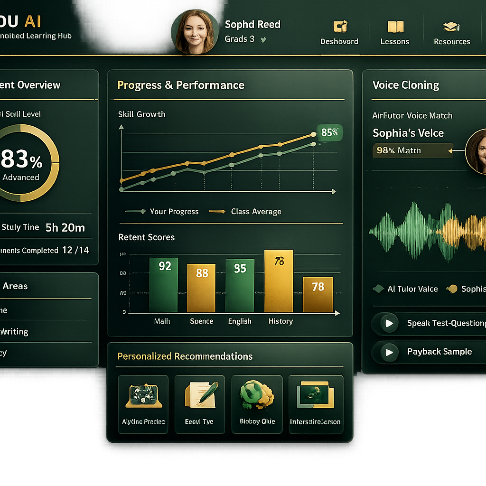
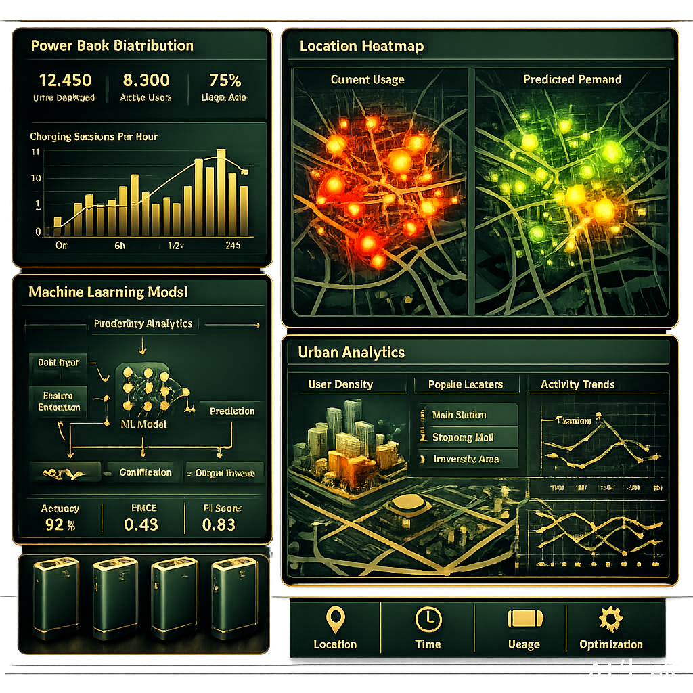
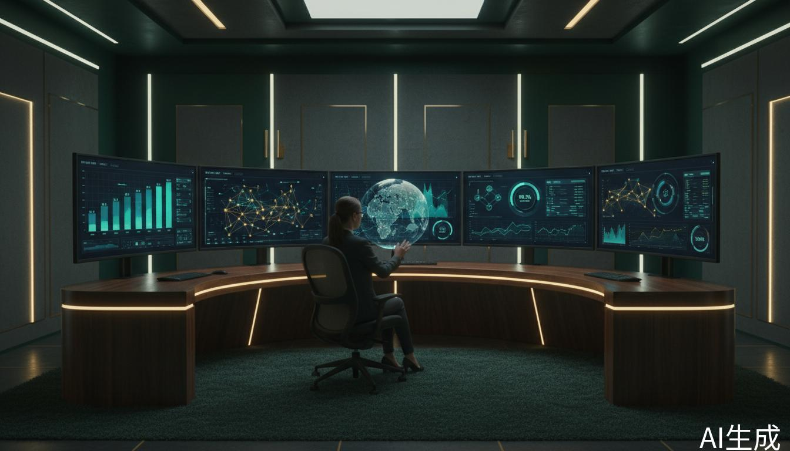

Work Experience

AI 产品经理实习生
AI 产品经理实习生
北京 · 2024
负责AI视频讲解从0到1产品落地，单条语音合成成本降低 60%+
动态语速调节算法将音画同步误差控制在 ±50ms，播放完成率提升 25个百分点
产品已支撑日均 5000+ 习题讲解视频生成
Featured Projects


协同业务与数据团队统一指标口径，构建实时数据可视化看板。
Core Skills
其他技能
Education
本科 · 经济学
围绕产品思维、数据分析与 AI 应用持续学习，夯实统计分析与业务洞察能力。注重将理论与实践结合，形成从问题定义到方案落地的完整闭环。